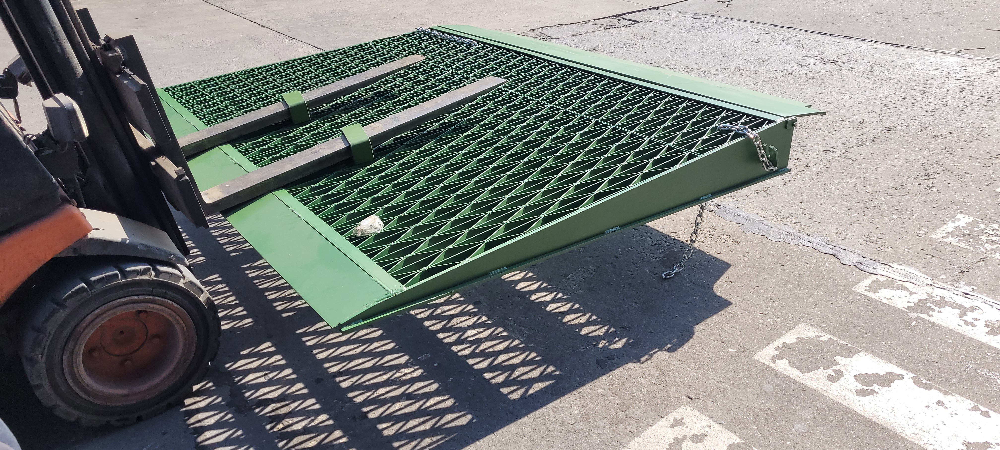
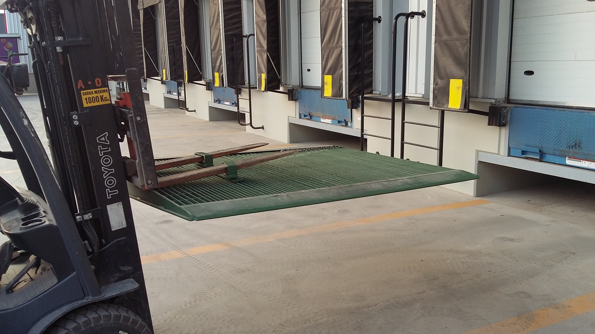
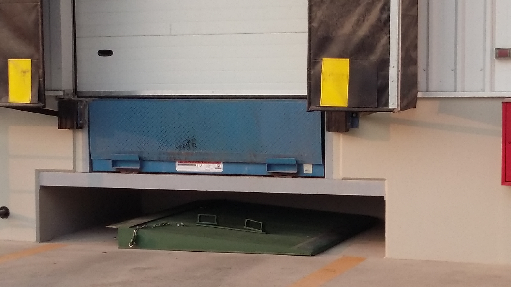
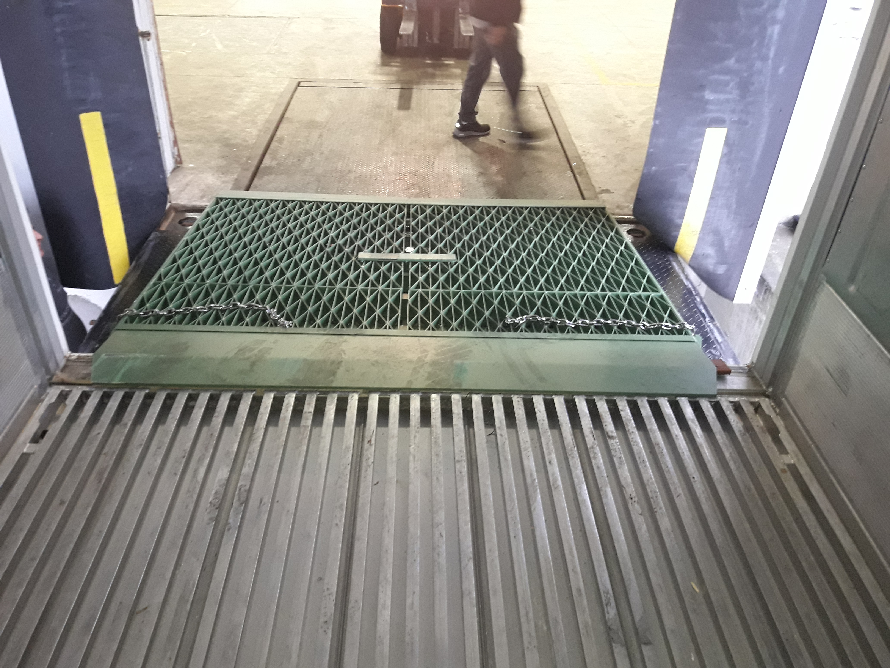
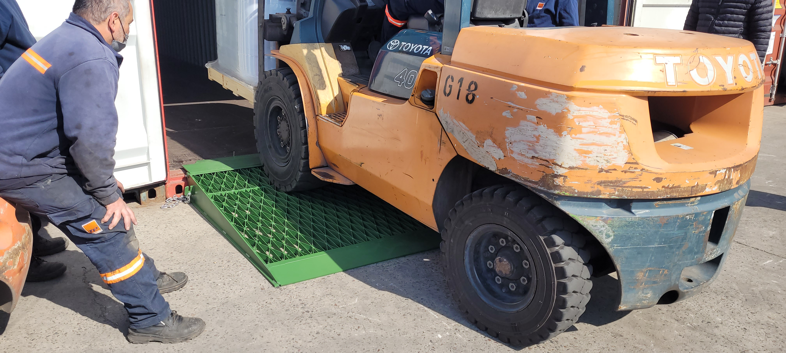
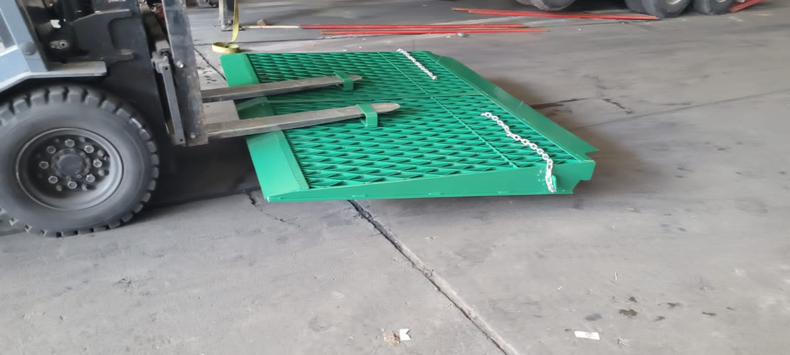

RAMPÍN ®








RAMPÍN® es la marca registrada de nuestro producto para ingreso a containers a piso.
Esta estructura de probada prestaciones se encuentra desde hace tiempo operando en el mercado, y va adoptando todas las mejoras que trae el hecho de ocuparnos de atender los temas operativos.
Rampín a Piso en modelos Dry y Reefer.
Rampín MODU para conectar posiciones adelantadas de containers 40´.
Rampín DOCK que puede atender conexiones especiales o hasta reemplazar Niveladoras hidráulicas de Dock si se cuenta con el desnivel apropiado.